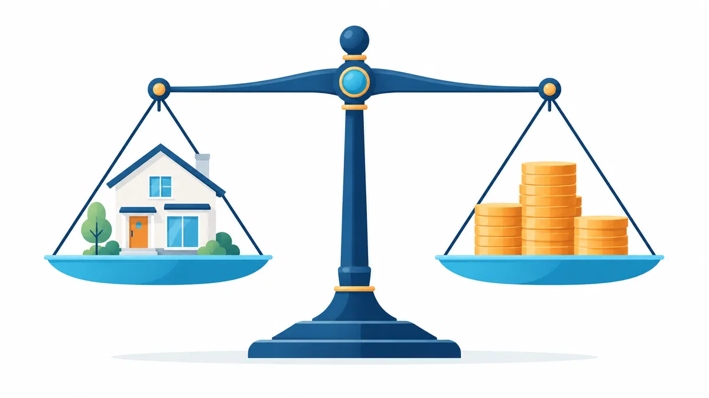

カードローンがあるときの住宅ローンの考え方。返済負担率と先に整理すべきこと

カードローンの残高があると、住宅ローンは組めないのでしょうか。
結論からいうと、残高があること自体で一律に不可になるわけではありません。金融機関が見ているのは「毎月の返済額の合計が、収入に対してどのくらいか」です。この記事では、その考え方と、お申込みの前に整理しておきたい点をまとめます。
- 一般的な情報の整理です。金融機関ごとの基準は公開されておらず、実際の判断は金融機関が行います。
- 数値は考え方を説明するための例です。
返済負担率とは
返済負担率は、年収に対して、1 年間の返済額の合計がどのくらいの割合になるかを示す数字です。ここでいう返済額には、これから組む住宅ローンだけでなく、カードローン・車のローン・教育ローン・リボ払いなど、現在返済中のすべてのお借入れが含まれるのが一般的です。
たとえば年収 400 万円の方が、住宅ローンで年間 120 万円、カードローンで年間 36 万円を返済する計画なら、返済負担率は（120 万円＋36 万円）÷ 400 万円 ＝ 39% になります。金融機関は、この割合が一定の範囲に収まっているかを重視します。範囲は金融機関・年収・商品ごとに異なりますが、割合が高いほど慎重に見られます。
カードローンが影響する 3 つの点
1. 毎月の返済額が負担として計算される
カードローンの毎月の返済額は、住宅ローンの返済額に上乗せして計算されます。残高が小さくても、毎月の返済額が大きい契約は影響が大きくなります。
2. 限度額そのものが見られることがある
残高がゼロでも、カードローンの契約が残っていると、限度額まで借りられる状態として見る金融機関があります。使っていないカードローンは、解約を検討する余地があります。
3. 件数と返済状況
お借入れの件数が多い場合や、返済の遅れがある場合は、残高の大きさとは別に慎重に見られます。過去の返済状況は一定期間記録として残ります。
お申込みの前に整理しておきたいこと
- お借入れを一覧にする。 借入先・残高・毎月の返済額・返済の遅れの有無を書き出します。リボ払いや分割払いも含めます。
- 使っていない契約を確認する。 残高がないカードローンや、使う予定のないクレジットカードのキャッシング枠は、整理の候補です。
- 完済する場合の影響を考える。 完済で毎月の返済負担は下がりますが、手元資金が減ると頭金や諸費用に影響します。どちらが有利かは状況によります。
- 住宅ローンと合わせて検討できる選択肢を確認する。 一部の金融機関には、住宅の取得資金と合わせて既存のお借入れの返済資金を検討できる商品があります。カードローンを対象に含めるかは金融機関により異なります。詳しくは こちらのコラム をご覧ください。
- 正確に申告する。 お借入れの内容を伏せてお申込みすることはおすすめしません。事実と異なる申告は、契約の無効や一括返済の請求につながる場合があります。
「先に完済」と「まとめて検討」のどちらがよいか
一概には言えません。手元資金に余裕があり、完済しても頭金と諸費用を確保できるなら、先に完済することで返済負担率が下がり、検討できる範囲が広がります。手元資金に余裕がない場合は、住宅の取得資金と合わせてお借入れの返済資金を検討する選択肢が候補になります。ただし、まとめられる金額には上限があり、対象外のお借入れもあります。
どちらの場合も、毎月の返済額だけでなく、返済期間全体の総支払額を確認してから決めることをおすすめします。